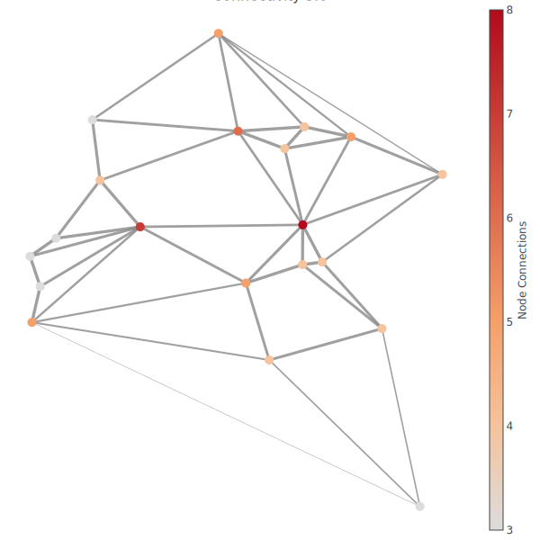

Setup
Install dependencies
import Pkg
let
pkgs = ["PlotlyLight", "ColorSchemes", "VisualizationBag", "SpatialGSP"]
for pkg in pkgs
if Base.find_package(pkg) === nothing
Pkg.add(pkg)
end
end
end;Load packages.
using LinearAlgebra
import PlotlyLight as PLY
import ColorSchemes
import VisualizationBag as VIZ
import SpatialGSP as GSP
import Random
Random.seed!(25);Specify floating-point data type and dimension.
T = Float64
D = 2;Scattered positions.
N = 20
X = collect( randn(T, D) for _ = 1:N );
#uncomment this if we want to see the graph generated from a grid instead of scattered positions.
#X0 = vec(collect( Iterators.product(-5:4,-3:6) ))
#X = collect( convert(Vector{T}, collect(x)) for x in X0)
#N = length(X);Axis search graph construction
η controls the creation of edges from X. w_lb is the minimum edge weight. The other edges are weighted according to a square exponential kernel that attains w_lb for the shortest pair-wise distance in X. Larger values of η means the generated graph is more like a nearest neighbors graph. A lower value means the generated graph is more like a grid graph.
η = convert(T, 3)
kernel_ref = GSP.SqExp(T)
config = GSP.AxisSearchConfig{T}(
kernel_σ_multiplier = η,
make_undirected = true,
remove_null_nbs = true,
w_lb = convert(T, 0.1)
);Construct the graph: Nodes are the points in X.
G = GSP.create_axis_graph(config, X);Visualize
width = 600 # plot width.
height = 600; # plot height.Create edges
edge_h = GSP.getedgecoord(G, X, 1) # horizontal
edge_v = GSP.getedgecoord(G, X, 2); # verticalCreate a PlotlyJS trace for nodes.
x_h = map(xx->xx[begin], X)
x_v = map(xx->xx[begin+1], X)
N_nbs = GSP.getNnbs(G)
nodes_trace = PLY.Config(
name = "Node",
x = x_v,
y = x_h,
mode = "markers",
text = [
"Node $n, Neighbors: $(N_nbs[n])"
for n in eachindex(N_nbs)
],
marker = PLY.Config(
showscale = true,
colorscale = ColorSchemes.viridis,
color = N_nbs,
size = 10,
colorbar = PLY.Config(
thickness = 15,
title = "Node Connections",
xanchor = "left",
titleside = "right"
),
),
);Create the PlotlyJS layout trace.
layout = PLY.Config(
width = width,
height = height,
margin = PLY.Config( # rid of white spaces around the saved plot.
l = 1, # measured in pixels. l for left, etc.
r = 1,
t = 1,
b = 1,
),
hovermode = "closest",
title = "Connectivity $η",
titlefont = PLY.Config(
size = 16,
),
showlegend = false,
showarrow = false,
xaxis = PLY.Config(
showgrid = false,
zeroline = false,
showticklabels = false,
),
yaxis = PLY.Config(
showgrid = false,
zeroline = false,
showticklabels = false,
),
);Create the trace for edges and their midpoints. The implementation is in the VisualizationBag package.
eds, mid_pts_trace = VIZ.get2Dedgetraces_variablewidth(
PLY, G.edges.srcs, G.edges.dests, G.edges.ws, X,
);v = vcat(eds...)
push!(v, mid_pts_trace)
push!(v, nodes_trace)
ph = PLY.Plot(v, layout);Save plot
#Uncomment to save as HTML.
#PLY.save(ph, "output/axis_graph_$(η).html")
import PlotlyKaleido
PlotlyKaleido.start()Pause the current Julia session until we save the image.
t = @task begin
(;data, layout, config) = ph
PlotlyKaleido.savefig(
ph,
"axis_lit.svg";
width = width,
height = height,
)
end
schedule(t)
wait(t);
The node colors correspond to the number of connections, and the thickness of an edge is proportional to the edge weight.
This page was generated using Literate.jl.